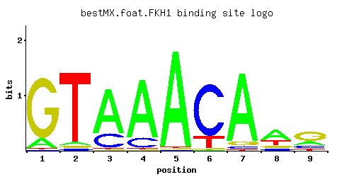

FKH1
YIL131C
Forkhead family transcription factor with a minor role in the expression of G2/M phase genes; negatively regulates transcriptional elongation; positive role in chromatin silencing at HML and HMR; regulates donor preference during switching
Best-performing DNA-binding model.

View and copy the recommended matrices ↘
A | 0.13 0.04 0.74 0.83 0.97 0.01 0.89 0.55 0.20 C | 0.01 0.03 0.24 0.15 0.01 0.81 0.04 0.10 0.17 G | 0.85 0.03 0.01 0.01 0.01 0.01 0.06 0.12 0.54 T | 0.01 0.90 0.01 0.01 0.01 0.18 0.01 0.23 0.09
A | 13 4 74 83 97 1 89 55 20 C | 1 3 24 15 1 81 4 10 17 G | 85 3 1 1 1 1 6 12 54 T | 1 90 1 1 1 18 1 23 9
A | -0.90 -2.08 0.84 0.95 1.11 -3.47 1.02 0.54 -0.47 C | -2.89 -1.79 0.29 -0.18 -2.89 1.50 -1.50 -0.59 -0.06 G | 1.55 -1.79 -2.89 -2.89 -2.89 -2.89 -1.10 -0.41 1.10 T | -3.47 1.03 -3.47 -3.47 -3.47 -0.58 -3.47 -0.33 -1.27
Alternative candidate matrices 6
Historical matrix candidates from the original ScerTF database. Expand a source to inspect its original logo, scores, and matrix values.
FKH1Harbison et. al.P = 4.44e-30View matrix ↘
FKH1Macisaac et. alP = 1.42e-36View matrix ↘
FKH1Morozov et. al.P = 4.81e-11View matrix ↘
FKH1Pachkov et alP = 9.06e-28View matrix ↘
FKH1Zhu et. al.P = 5.42e-26View matrix ↘
FKH1Zhao and StormoP = 1.12e-31View matrix ↘
Gene-level annotations and interactions.
Genes bound in ChIP-chip experiments 284 genes
YAR014C, YAR015W, YAR070C, YAR071W, YBL056W, YBL057C, YBL081W, YBL082C, YBL083C, YBL097W, YBR009C, YBR010W, YBR029C, YBR030W, YBR070C, YBR071W, YBR077C, YBR078W, YBR104W, YBR109C, YBR110W, YBR138C, YBR139W, YBR158W, YBR163W, YCL027W, YCL063W, YCL064C, YCR025C, YCR075C, YCR077C, YCR079W, YCR089W, YCR092C, YCR093W, YDL017W, YDL018C, YDL049C, YDL084W, YDL230W, YDL231C, YDL240W, YDR003W, YDR027C, YDR084C, YDR085C, YDR107C, YDR108W, YDR113C, YDR115W, YDR179C, YDR179W-A, YDR259C, YDR263C, YDR284C, YDR285W, YDR324C, YDR325W, YDR331W, YDR370C, YDR371W, YDR378C, YDR379W, YDR451C, YDR452W, YDR488C, YDR489W, YDR500C, YDR501W, YDR538W, YEL015W, YEL016C, YEL017C-A, YEL017W, YER031C, YER032W, YER046W, YER064C, YER070W, YER071C, YER072W, YER087W, YER094C, YER095W, YER122C, YER123W, YER124C, YER125W, YFL021W, YFL022C, YFL037W, YFL038C, YFR003C, YFR004W, YFR017C, YFR018C, YFR019W, YFR023W, YFR044C, YFR045W, YFR051C, YFR052W, YGL028C, YGL073W, YGL075C, YGL092W, YGL116W, YGL256W, YGL257C, YGR037C, YGR038W, YGR041W, YGR050C, YGR092W, YGR098C, YGR099W, YGR107W, YGR168C, YGR171C, YGR188C, YGR268C, YGR270W, YHL024W, YHR049W, YHR060W, YHR084W, YHR086W, YHR090C, YHR094C, YHR095W, YHR101C, YHR102W, YHR103W, YHR117W, YHR118C, YHR119W, YHR143W, YHR183W, YHR199C, YHR200W, YIL015W, YIL059C, YIL076W, YIL077C, YIL158W, YJL078C, YJL100W, YJL101C, YJL102W, YJL103C, YJL105W, YJL189W, YJL190C, YJL210W, YJL212C, YJR010C-A, YJR091C, YJR092W, YJR094C, YJR111C, YJR112W, YKL001C, YKL063C, YKL069W, YKL096W-A, YKL097C, YKL157W, YKL170W, YKL195W, YKL196C, YKL217W, YKR011C, YKR013W, YKR014C, YKR054C, YKR055W, YKR059W, YKR093W, YLR011W, YLR092W, YLR113W, YLR114C, YLR115W, YLR131C, YLR209C, YLR210W, YLR257W, YLR272C, YLR286C, YLR300W, YLR353W, YLR390W-A, YLR399C, YLR400W, YLR406C, YLR407W, YLR408C, YML063W, YML064C, YML100W, YML101C, YML102C-A, YML104C, YMR076C, YMR078C, YMR079W, YMR086W, YMR117C, YMR144W, YMR176W, YMR183C, YMR184W, YMR197C, YMR198W, YMR199W, YMR215W, YMR232W, YMR261C, YMR262W, YMR264W, YMR304C-A, YMR305C, YMR306W, YNL091W, YNL093W, YNL100W, YNL103W, YNL104C, YNL138W, YNL139C, YNL140C, YNL145W, YNL174W, YNL176C, YNL212W, YNL213C, YNL218W, YNL219C, YNL272C, YNR046W, YOL023W, YOL030W, YOL031C, YOL113W, YOL114C, YOL165C, YOR095C, YOR096W, YOR098C, YOR099W, YOR239W, YOR240W, YOR309C, YOR310C, YOR312C, YOR315W, YOR357C, YOR358W, YPL024W, YPL025C, YPL032C, YPL048W, YPL049C, YPL116W, YPL117C, YPL139C, YPL140C, YPL141C, YPL155C, YPL179W, YPL226W, YPL227C, YPR009W, YPR013C, YPR033C, YPR034W, YPR035W, YPR045C, YPR046W, YPR075C, YPR104C, YPR119W, YPR195C, YPR204W
Genes affected by TF deletion 27 genes
YAL034W-A, YHR146W, YMR192W, YOR038C, YOR231W, YOR043W, YER124C, YKL219W, YHR215W, YPL122C, YDL040C, YFL050C, YGL112C, YNR038W, YDL046W, YPR001W, YDR298C, YPR035W, YNR042W, YMR034C, YNL043C, YHR135C, YLR427W, YMR215W, YOR094W, YBL051C, YOR370C
Genes supported by both experiments 3 genes
YER124C, YMR215W, YPR035W
Predicted TF–TF partners 6 genes
MBP1, MCM1, NDD1, STB1, SWI4, SWI6